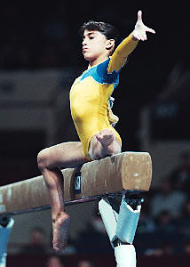

Daniele Hypolito (BRA)
2001 World FX Silver Medalist

Medal Total
World Championships: 1
Silver
World Cup: 1
Silver
Daniele was born on September 8, 1984. Her brother, Diego, is also a world-class gymnast. She was the first Brazilian gymnast to win a medal at a world championships.
Competition Results
1996
Jr. International Gymnix: 5th Team, 7th AA
1997
Massilia Cup: 8th UB
1998
American Cup: 15th AA (prelims)
Jr. Pan American Games: 1st AA, 1st FX
1999
BRA Championships: 4th AA
Canberra Cup: 1st AA
World Championships: 27th AA
2000
Olympic Games: 20th AA
2001
Gymnix International: 4th AA
Massilia Cup: 2nd AA, 1st FX, 4th B, 5th V
PAGU Championships: 5th AA, 3rd FX
World Championships: 4th AA, 2nd FX
2002
BRA Championships: 1st Team, 1st AA, 4th UB, 4th B, 7th FX
Cottbus International: 1st B
DTB Cup: 4th B
South American Games: 1st AA, 1st V, 1st B, 1st FX, 2nd UB
USA-BRA-UKR Meet: 7th AA
World Championships: 5th FX
2003
BRA Championships: 2nd Team, 1st AA, 2nd UB, 3rd V, 3rd B, 5th FX
French International: 2nd FX, 7th UB
Pan American Games: 3rd Team, 3rd AA, 2nd UB, 2nd B
ROM-ESP-BRA Meet: 5th AA
World Championships: 24th AA
2004
BRA Championships: 2nd Team, 4th AA, 2nd UB, 3rd V, 3rd B, 3rd FX
Copa La Serena: 2nd UB, 2nd FX, 3rd B
French International: 5th B
Ghent World Cup Qualifier: 2nd FX, 3rd UB, 5th B
Glasgow Grand Prix: 2nd B, 5th FX, 6th UB
Olympic Games: 9th Team, 12th AA
Pre-Olympic Test Event: 24th UB (quali), 29th B (quali), 48th FX (quali)
Sigfried Fischer Trophy: 1st B, 2nd UB
World Cup: 5th UB, 6th FX, 7th B
2005
BRA Championships: 2nd Team, 1st AA, 2nd UB, 3rd V, 3rd B, 3rd FX
Pre-Pan American Gymnastics Championships: 2nd Team, 2nd AA, 2nd UB,
2nd FX, 5th B
2006
World Championships: 21st AA
World Cup: 2nd B, 4th FX, 6th UB
This page was created on November
24, 2005 and was last updated on April 10, 2006.
© Gymn Forum